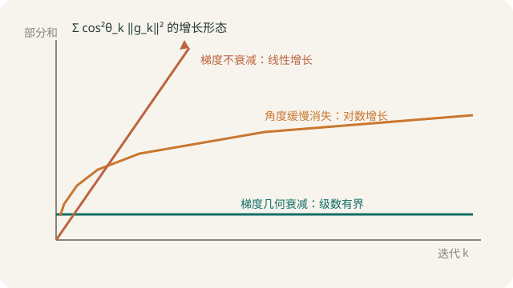

5.2.5 全局收敛：Zoutendijk 条件下的 β 有界性
线搜索的收敛分析留下一个未完成的条件：角度级数要收敛。对非线性共轭梯度，这要靠 β 有界来保证。Fletcher–Reeves 与 Polak–Ribière 在这件事上的运气截然不同：前者可以证明，后者存在停滞反例。
Zoutendijk 条件回顾
3.2 节给出 Zoutendijk 条件：若每个搜索方向 p_k 满足下降条件 g_kᵀp_k<0，步长满足 Wolfe 条件，目标在水平集上有下界且梯度 Lipschitz 连续，则下列级数收敛，从而梯度的下极限为零，即迭代趋于驻点。
其中 cosθ_k=−g_kᵀp_k/(‖g_k‖‖p_k‖) 是下降角。条件的形式是“级数收敛⇒梯度趋零”，难点在于证明级数确实收敛。

为何需要 β 有界
对非线性 CG，Zoutendijk 条件还差一步：必须保证 cosθ_k 与 ‖g_k‖ 配合，使级数收敛。FR 的方向导数为 g_kᵀp_k=−‖g_k‖²+β_k g_kᵀp_{k−1}；若 β_k 无界，p_k 会被上一步方向主导，cosθ_k 就可能趋于 0，级数发散，Zoutendijk 什么也不给。
因此收敛证明分两步：先证明 β_k 有界（或 p_k 与 p_{k−1} 的关系受控），再代入 Zoutendijk 得到 liminf‖g_k‖=0。带精确线搜索的 FR 可以做到，因为 g_kᵀp_{k−1}=0 给出 g_kᵀp_k=−‖g_k‖²。
当 β_k 很大时，p_k=−g_k+β_k p_{k−1} 几乎与 p_{k−1} 平行，与 −g_k 的夹角变小，下降变慢。有界的 β 正是为避免这种“旧方向主导”而设。
FR 的收敛结论
结论（Al-Baali, 1985；综述见 Nocedal & Wright §5.2.5）：设 f 在水平集上有下界、∇f Lipschitz 连续，线搜索满足强 Wolfe 条件且参数 σ<1/2，则 Fletcher–Reeves 方法全局收敛，即 liminf_{k→∞}‖g_k‖=0。
直觉是：强 Wolfe 条件对 g_kᵀp_{k−1} 给出有界控制，从而使 β_k 不可能无限增大，cosθ_k 不会塌缩，级数得以收敛。注意结论是最小极限（liminf）为零，不保证梯度的每一段都单调下降。
PR 的反例与 PR+
Polak–Ribière 反而可能失效。Powell（1984）构造了一个三维函数，使 PR 方法即使采用精确线搜索也不收敛：迭代点绕圈、梯度范数始终有正下界。原因是精确线搜索只保证当前步的正交关系 g_kᵀp_{k−1}=0；当目标非二次时旧的正交关系不再周期性成立，β 可能失控。
修正办法是 PR+（把 β^{PR} 取非负部分）。Gilbert 与 Nocedal（1992）证明：在强 Wolfe 线搜索下 PR+ 全局收敛。把 β 截断为 0 相当于在坏方向上重启，正是 5.2.3 的机制。
边界与证据
这些结论都有明确假设：目标光滑、水平集有界、梯度 Lipschitz 连续、线搜索满足 Wolfe 或强 Wolfe 条件。它们只保证收敛到驻点，不区分局部极小与鞍点，也不给出收敛速度。FR 的结论依赖强 Wolfe 参数 σ<1/2，PR+ 的证明结构不同。
本页不重述证明，只给出条件、结论及其边界。原始结果见 Al-Baali（1985）、Powell（1984）、Gilbert 与 Nocedal（1992），教材本章末列出对应文献。
交互：级数什么时候有界
固定角度 cos²θ=1/4，拖动滑块改变梯度衰减因子 r（令 ‖g_k‖=r^k）。r<1 时级数收敛到有限极限；r=1 时部分和随 k 线性增长。这正是 Zoutendijk 条件需要梯度衰减的原因。该计算为教学示意。
实时模型计算
Python：Zoutendijk 级数的分数断言
下面的程序只依赖标准库，用精确分数比较三种轮廓下的部分和：梯度几何衰减的有界、梯度不衰减的线性增长、角度缓慢消失的对数增长。
"""Zoutendijk implication: the angle bound decides whether the sum stays finite."""
import math
from fractions import Fraction
def series(angle2, grad2, n):
return sum(angle2(k) * grad2(k) for k in range(1, n + 1))
if __name__ == "__main__":
n = 1000
vanish = series(lambda k: Fraction(1, 4), lambda k: Fraction(9, 10)**(2*k), n)
limit = Fraction(81, 76)
assert vanish < limit
flat = series(lambda k: Fraction(1, 4), lambda k: Fraction(1), n)
assert flat == Fraction(n, 4)
slow = series(lambda k: Fraction(1, k), lambda k: Fraction(1), n)
assert math.log(n + 1) < float(slow) < 1 + math.log(n)
print("vanishing gradient sum", round(float(vanish), 4), "< limit", float(limit))
print("flat gradient sum", int(flat), "| slowly-vanishing angle sum", round(float(slow), 4))